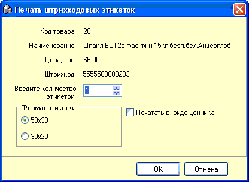

Для печати штрихкодовых этикеток для товаров не
имеющих собственного штрихкода, если он поврежден или некорректно напечатан,
используется 2 варианта печати ш/к этикеток: по одному товару и по нескольким
выбранным товарам. Также в настройках должна быть разрешена работа с таким
принтером и правильно установлен тип принтера и настройки связи с
ним.
1. Печать этикеток по одному товару.
Печать будет осуществляться только для активного товара справочника,
на котором стоит курсор. Нажмите пункт меню "Печать штрихкодовых
этикеток...".
После выбора данного меню откроется справочник
складов по которому нужно определить розничные цены, в нем выделите нужный
склад и нажмите Enter. Появится окно выбора параметров печати
этикеток:

Здесь можно выбрать размер заправленной в принтер
этикетки, установить количество копий этикеток, выбрать формат этикетки - в
виде ценника, или нет.
2. Печать этикеток по нескольким
товарам. Выберите пункт меню "Печать штрихкодовых этикеток по
кодам...". Далее нажмите пункт подменю "начать набор". Внизу окна
справочника появится окошко отбора кодов товаров (такое же, как при печати
ценников по кодам). Перемещайтесь по справочнику и клавишей "Пробел" выбирайте
нужные коды. Когда выбор закончен, для печати нажмите пункт "печатать". В
появившемся справочнике складов предприятия, выберите двойным щелчком мыши
склад по которому нужно определить розничные цены. Для первого товара
отобранного списка откроется диалоговое окно, аналогичное печати ш/к этикеток
для одного товара, в котором укажите параметры формата этикетки и количество
копий. Нажмите "ОК". Для всех остальных отобранных товаров при печати
этикеток будут использованы настройки формата и количество копий, указанных
только что, для первого товара.